와인(음료)쇼케이스
와인바 냉장고, 일반 업소용 냉장고로 버티면 생기는 일
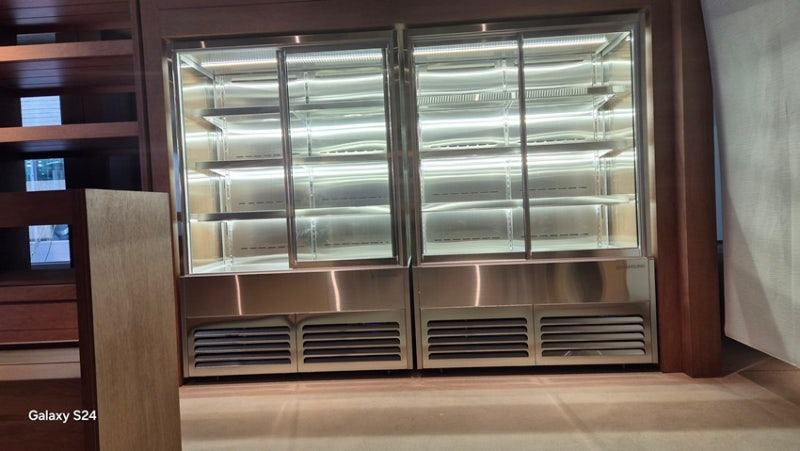
와인은 온도 변화, 습도 부족, 자외선, 진동에 민감해서 일반 업소용 냉장고로는 품질을 지키기 어렵습니다. 와인바 냉장고는 용량, 와인 종류별 온도 조절, 디자인, 에너지 효율, 진동·소음 다섯 가지를 확인하고, 가능하면 보관용과 서빙용을 나눠 구성하시는 것이 좋습니다.
안녕하세요. 와인 쇼케이스와 업소용 와인냉장고를 맞춤 제작하는 한성쇼케이스입니다.
와인바를 준비하시는 사장님 중에는 처음엔 주방에 있는 업소용 냉장고 한 칸을 비워 와인을 넣어 두시는 분들이 계십니다.
병 수가 적을 땐 괜찮아 보이지만, 시간이 지나면서 코르크가 마르거나 와인 맛이 처음과 다르다는 이야기를 듣게 됩니다.
와인은 차갑기만 하면 되는 음료가 아닙니다. 온도가 자주 오르내리거나, 공기가 건조하거나, 빛과 진동에 계속 노출되면 서서히 품질이 변합니다.
오늘은 와인바 냉장고가 일반 냉장고와 무엇이 달라야 하는지, 그리고 구매 전에 무엇을 확인하면 되는지 정리해 보겠습니다.
1. 와인이 예민하게 반응하는 네 가지
첫째는 온도 변화입니다. 주방 냉장고는 하루에도 수없이 문이 열려 온도가 오르내리는데, 이런 급격한 변화는 와인의 맛과 향을 변질시킵니다.
둘째는 습도입니다. 공기가 건조하면 코르크가 말라 틈이 생기고, 그 사이로 공기가 들어가 산화가 빨라질 수 있습니다.
셋째는 자외선입니다. 빛에 오래 노출되면 와인의 색과 향이 변합니다.
넷째는 진동입니다. 계속되는 진동은 숙성을 방해하고 병 바닥의 침전물을 흔들어 맛을 해칩니다.
일반 냉장고는 이 네 가지를 모두 제어하도록 만들어지지 않았습니다.
- 온도 변화
- 습도 부족과 코르크 건조
- 자외선 노출
- 진동
2. 보관용과 서빙용을 나누는 이유
와인바에는 오래 두고 팔 와인과 그날 바로 따를 와인이 함께 있습니다. 오래 보관할 와인은 문을 거의 열지 않는 안정된 환경이 필요하고, 서빙할 와인은 바로 꺼낼 수 있는 자리에 마실 온도로 준비돼 있어야 합니다.
한 대에 다 넣으면 서빙 때마다 문이 열려 보관용 와인까지 온도 변화를 겪습니다. 그래서 규모가 있는 와인바는 벽면 진열 겸 보관용 쇼케이스와 바 안쪽의 서빙용 냉장고를 나눠 두는 경우가 많습니다.
맥주나 음료는 또 따로 두시는 편이 관리가 편합니다.
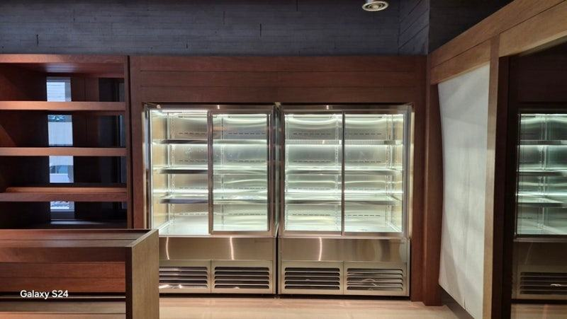
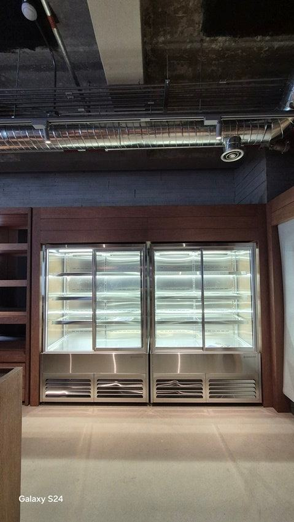
3. 구매 전 확인할 다섯 가지
용량은 매장 규모와 와인 소비량에 맞춰 정하세요. 너무 작으면 결국 남는 병을 다른 곳에 두게 됩니다.
온도 조절은 레드, 화이트, 스파클링처럼 와인 종류별로 세밀하게 맞출 수 있는지 확인하세요.
디자인은 매장 분위기와 어울려야 인테리어 효과가 납니다. 장시간 켜 두는 장비이니 에너지 효율도 꼼꼼히 보시고, 마지막으로 진동과 소음이 적은지 확인하세요.
조용한 바 공간에서는 냉장고 소음이 손님 대화에 그대로 들립니다.
- 용량
- 와인 종류별 온도 조절
- 디자인
- 에너지 효율
- 진동·소음
4. 설치 자리도 품질의 일부입니다
좋은 와인냉장고를 들여도 주방 화구 옆이나 햇빛이 드는 창가에 두면 장비가 더 힘들게 돌아가고 온도도 흔들리기 쉽습니다.
열원과 직사광선을 피한 자리에 두고, 뒷면과 윗면에 열이 빠질 공간을 남겨 두세요.
바 카운터 아래처럼 사람이 자주 기대거나 발로 차는 자리도 진동이 생기기 쉬운 곳입니다. 서빙용이라도 바닥이 단단하고 수평이 맞는 자리에 설치하시면 와인이 받는 흔들림을 줄일 수 있습니다.
체크리스트
- 취급 와인 수와 회전 속도
- 레드·화이트·스파클링 온도 구역
- 습도 유지 기능
- 자외선 차단 유리
- 진동·소음 수준
- 보관용·서빙용 분리 여부
현장에서 자주 보는 경우: 와인을 일반 냉장고에 두다 업소용 와인냉장고로 바꾸는 매장
업소용 와인냉장고 상담을 하다 보면 일반 냉장고로 시작했다가 와인 품질 문제로 바꾸시는 경우가 많습니다.
와인은 온도, 습도, 빛, 진동 같은 외부 환경에 민감해 일반 냉장고로는 이 요소들을 제대로 제어하기 어렵기 때문입니다.
그래서 와인 종류에 따라 온도를 정밀하게 맞추고, 습도를 조절해 코르크를 보호하며, 진동을 줄이고 UV 차단 유리로 자외선을 막는 구성을 제안합니다.
매장 크기와 인테리어, 취급하는 와인 종류를 고려한 1:1 맞춤 제작으로 진행하며, 와인바뿐 아니라 레스토랑과 와인 판매점에서도 같은 기준으로 상담합니다.
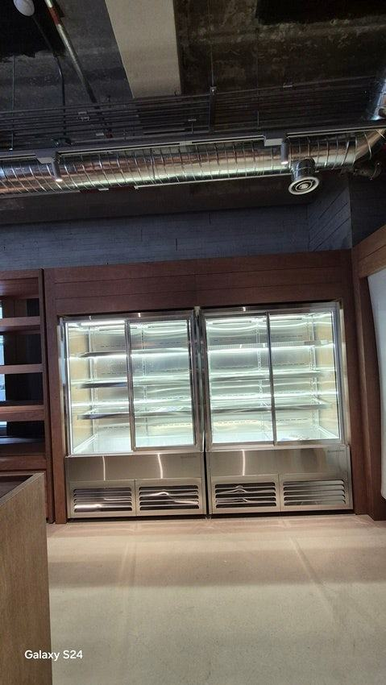
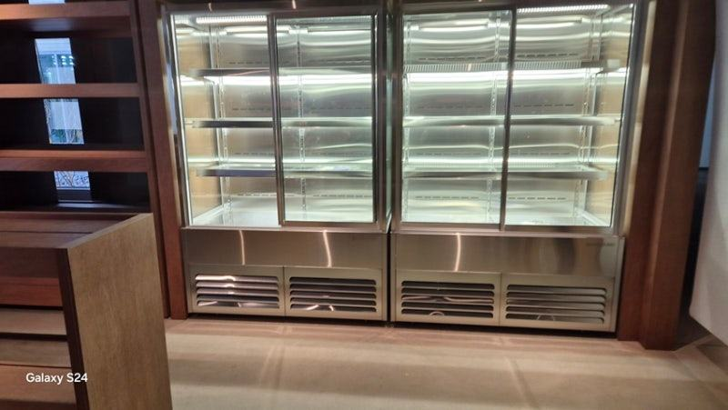
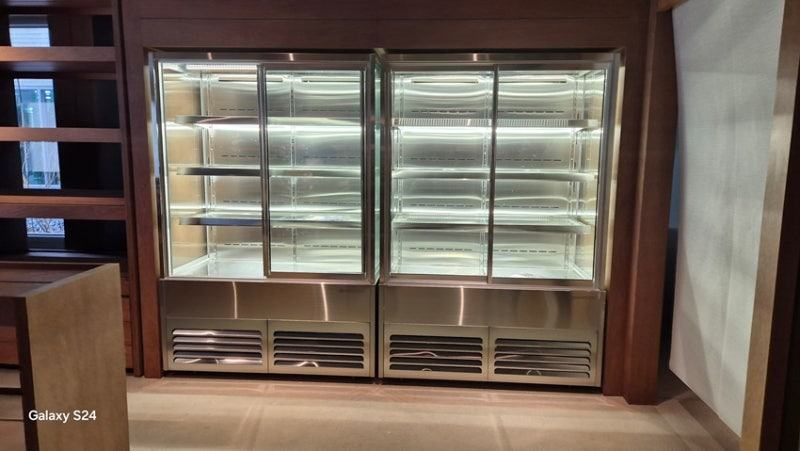
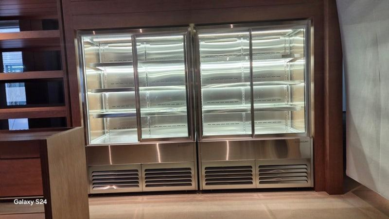
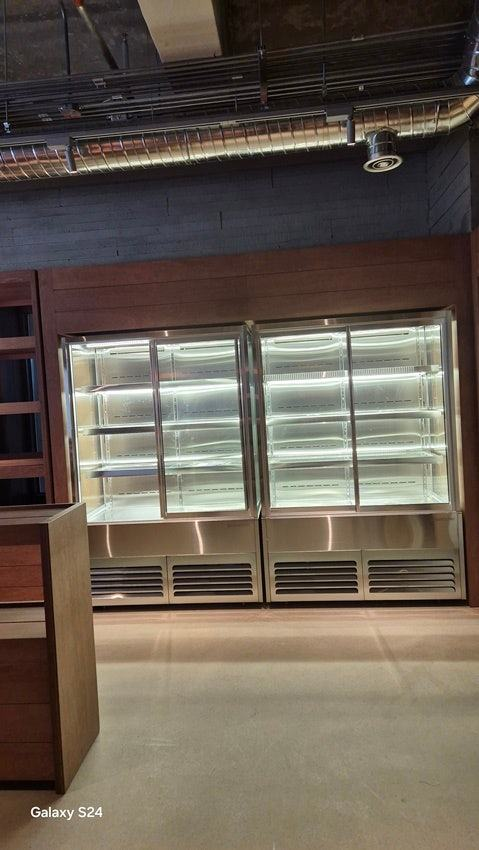
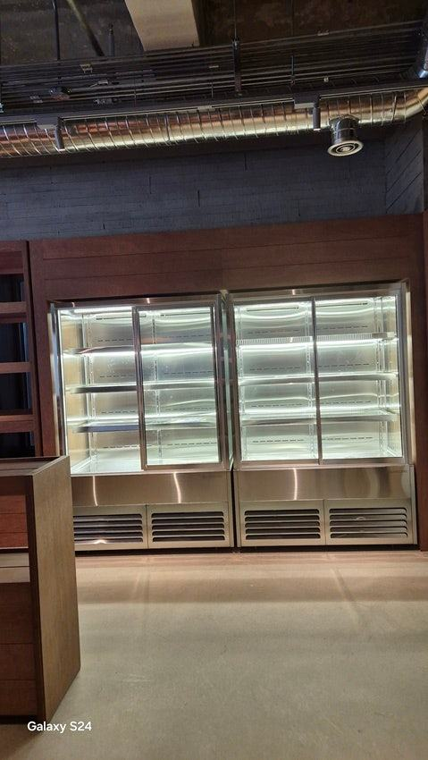
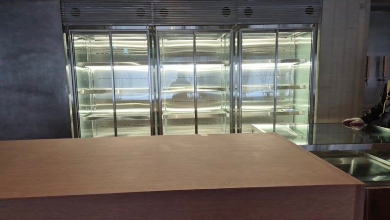

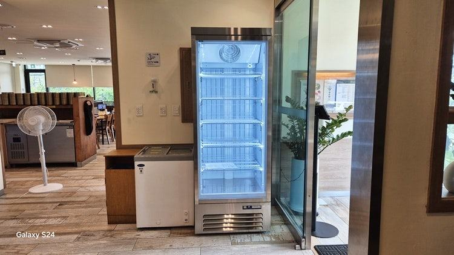
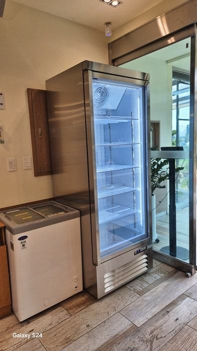
자주 묻는 질문
레드와 화이트를 한 대에 같이 보관해도 되나요?
구역별로 온도를 다르게 맞출 수 있는 구성이라면 함께 둘 수 있습니다. 한 온도로만 운영되는 제품이라면 서빙 전 온도를 따로 맞추는 방법을 고려하셔야 합니다.
와인 냉장고 소음이 신경 쓰이는데 줄일 방법이 있나요?
진동과 소음이 적은 구조를 고르는 것이 먼저이고, 설치할 때 바닥 수평과 벽과의 간격을 맞추면 울림을 줄이는 데 도움이 됩니다.
와인바 규모가 작아도 업소용 와인냉장고가 필요할까요?
병 수가 적더라도 문을 자주 여는 주방 냉장고에 두면 품질이 변하기 쉽습니다. 작은 매장이라면 바 안쪽에 맞는 슬림한 크기로 맞춰 보세요.
매장 조건에 맞춰 만드는 한성쇼케이스
원하시는 제품 사진과 설치할 공간 사진만 보내 주셔도 매장에 맞는 구성을 추천해 드립니다.
- 전국 240여 개 A/S 전담 센터 운영
- 본사 대량 자재 매입으로 품질 대비 합리적인 가격
- 유럽제·삼성 냉각 콤프레셔 적용
- 국내 최초 쇼케이스 전문 디자이너 상주
매장 폭과 원하는 진열 구성을 알려 주세요. 실측과 견적을 안내해 드립니다.
031-986-2458